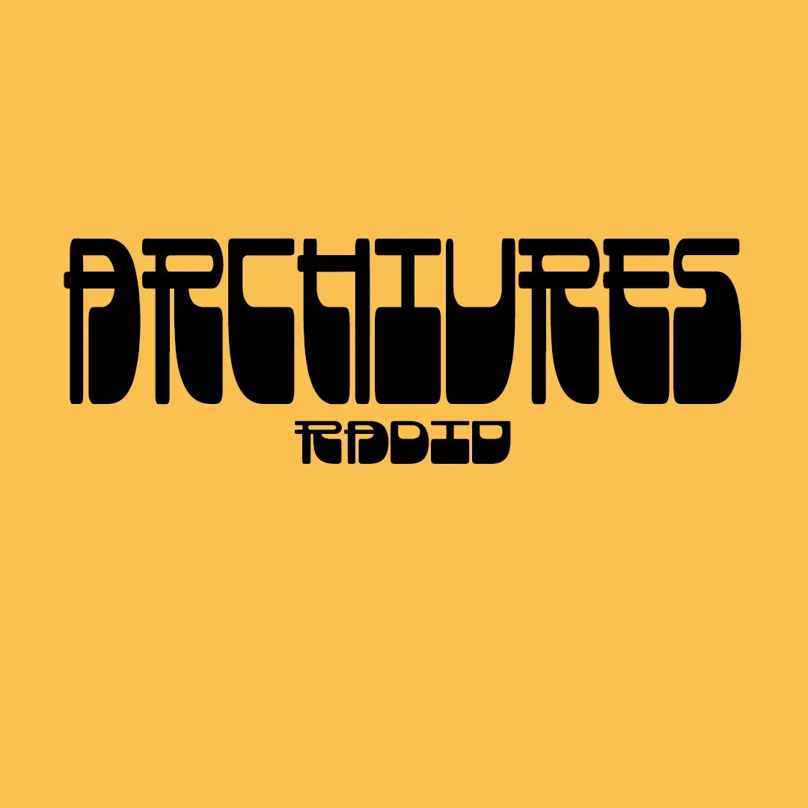

Transmission 06
Transmission 0606 / 06Radio collage — 1 heure
Archivre_06Sans Modération
Une heure de collages sonores construite autour d’une interview, de fragments de conversation, d’archives et de musiques tirées de moments d’ivresse.

Transmission indépendante
Émissions 01—06
Raoul Philly
Transmission 06Une heure de collages sonores construite autour d’une interview, de fragments de conversation, d’archives et de musiques tirées de moments d’ivresse.
 Transmission 05
Transmission 05Archives estivales, chansons françaises, hip-house et fréquences perdues entre radio de plage et club.
 Transmission 04
Transmission 04Une transmission froide faite de signaux étranges, d’électronique, de dub et de présences non identifiées.
 Transmission 03
Transmission 03Une émission plus brute : punk, post-punk, collisions sonores et cuts sans politesse.
 Transmission 02
Transmission 02Post-punk transmissions, dub pressure, cold bodies et fréquences étranges.
 Transmission 01
Transmission 01La première transmission : sons, films et souvenirs assemblés dans une heure de lumière trouble.
Beaucoup des enregistrements diffusés dans ARCHIVRES viennent de mes archives personnelles : conversations, prises de son, cassettes, vinyles, extraits de films et fragments enregistrés au fil du temps. Le projet mélange documents trouvés, matières personnelles et sélections musicales.